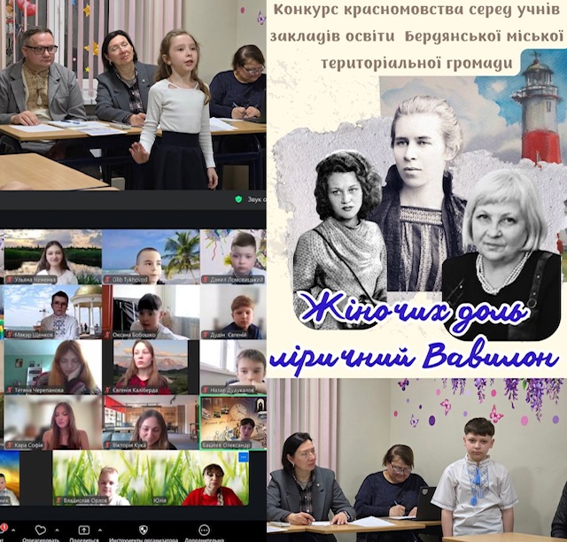

📖 Підсумки міського конкурсу «Жіночих доль ліричний Вавилон»
У Бердянській міській територіальній громаді завершився ІІ (фінальний) етап конкурсу красномовства, присвячений творчості видатних українських поетес.
🎤 Конкурс «Жіночих доль ліричний Вавилон» об’єднав талановитих учнів, які звернулися до творчості Лесі Українки, Ліни Костенко та Ольги Будугай.
🌸 У фінальному етапі взяли участь 20 учасників — учні закладів освіти громади, які декламували улюблені поезії та подарували глядачам незабутні емоції й щирі враження.
🏆 За рішенням журі всі учасники фіналу були визнані переможцями, що підкреслює високий рівень підготовки та творчий потенціал учнів.
🙏 Організатори висловлюють щиру подяку педагогам і батькам за підтримку учасників та запрошують долучатися до наступних конкурсів красномовства.